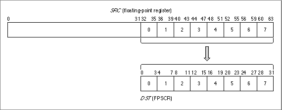

Legacy Document
Important: The information in this document is obsolete and should not be used for new development.
Important: The information in this document is obsolete and should not be used for new development.


Saving and Restoring the Floating-Point Environment
To save and restore the state of the entire floating-point environment, use themffsandmtfsfinstructions.The
mffsinstruction saves the FPSCR to a floating-point register. It has the form
mffs DSTwhere DST is the floating-point register into which the FPSCR should be copied. For example, the instruction
mffs f0saves the current state of the FPSCR register in bits 32 through 63 of floating-point register F0. Bits 0 through 31 of register F0 are set to 1's.To restore a floating-point environment that you have previously saved, use the
mtfsfinstruction. This instruction copies a 4-bit field from a floating-point register into an FPSCR field. It has the form
mtfsf DST, SRCwhere DST is a 4-bit FPSCR field and SRC is the floating-point register from which the field should be copied. The instruction assumes that the last half of the floating-point register SRC contains an FPSCR value. Thus, if you specify
mtfsf 3,f0bits 44 through 47 of register F0 are copied into FPSCR field 3, bits 12 through 15.
Figure 12-3 shows how the FPSCR fields map to a floating-point register.Figure 12-3 SRC and DST fields for
mtfsfinstruction
Listing 12-3 saves the floating-point environment and then restores it.
Listing 12-3 Saving and restoring the floating-point environment
mffs f10 # FPSCR copied into register f10 # other floating-point computations occur here mtfsf 0,f10 # restore bits 0 and 3 mtfsf 1,f10 # restore bits 4 through 7 mtfsf 2,f10 # restore bits 8 through 11 mtfsf 3,f10 # restore bits 12 through 15 mtfsf 4,f10 # restore bits 16 through 19 mtfsf 5,f10 # restore bits 20 through 23 mtfsf 6,f10 # restore bits 24 through 27 mtfsf 7,f10 # restore bits 28 through 31 # entire FPSCR now restored